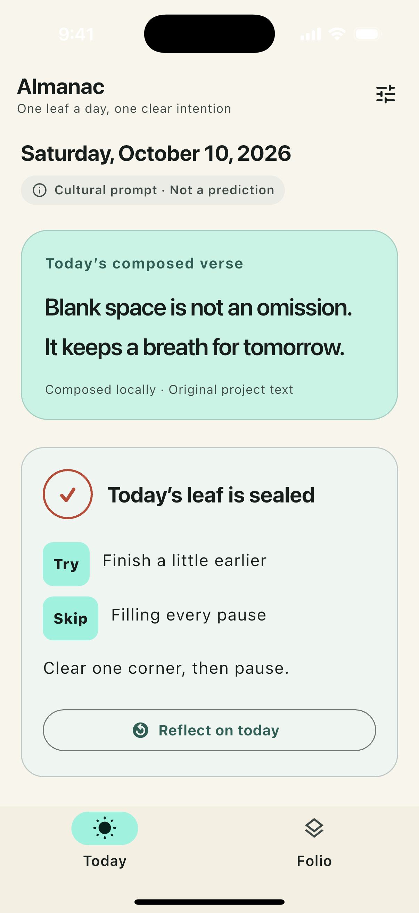
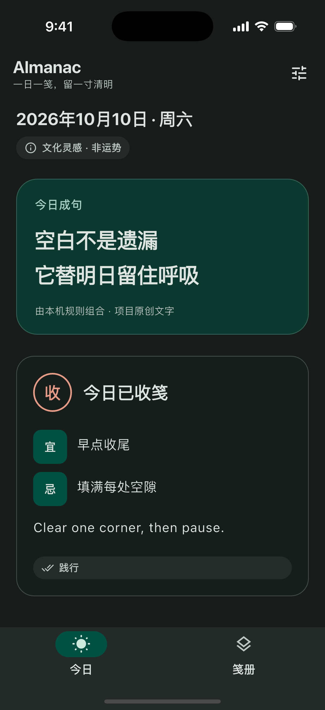

Choose a direction
Each day brings locally composed prompts and original verse. Pick one Try and one Skip, with an optional written intention.
A daily leaf, composed locally
Read an original short verse, choose one thing to try and one to skip, then return to the day when you are ready to reflect.
Explore the daily flow

Choose · seal · reflect
Each day brings locally composed prompts and original verse. Pick one Try and one Skip, with an optional written intention.
Seal the leaf, then reflect with Practiced, Reframed, or Released. A changed plan can still be worth remembering.
Sealed leaves remain in local app storage. Revisit them, copy the folio as Markdown, or clear daily records in Settings.
Almanac is for cultural reflection and personal choice. It does not predict outcomes or recommend auspicious dates. No account is needed.
选择 · 收笺 · 回看
每天阅读本机组合的原创提示与短诗，选一项“宜”和一项“忌”，也可写下一句意图。
收下今日笺，再以“践行”“调整”或“放下”记录结果。计划改变也值得记住。
已收下的日笺保存在应用本地。你可回看、复制为 Markdown，或在设置里清除每日记录。
Almanac 用于文化形式启发的自我反思与个人选择，不预测吉凶，也不提供择日建议。无需账号。
Almanac is operated by an independent developer. For support or privacy questions, email CercyServello4757@outlook.com.
Almanac 由独立开发者运营。如需帮助或咨询隐私问题，请发送邮件至 CercyServello4757@outlook.com。